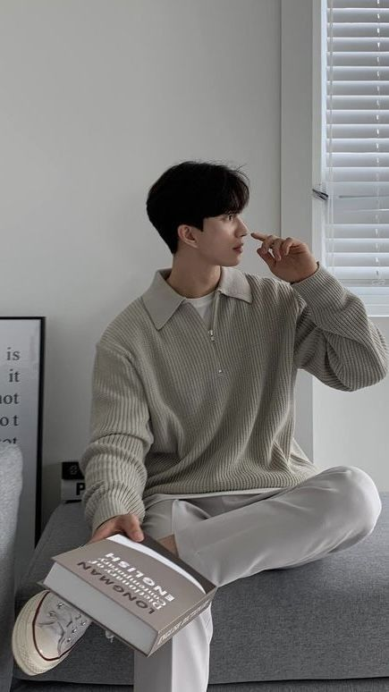
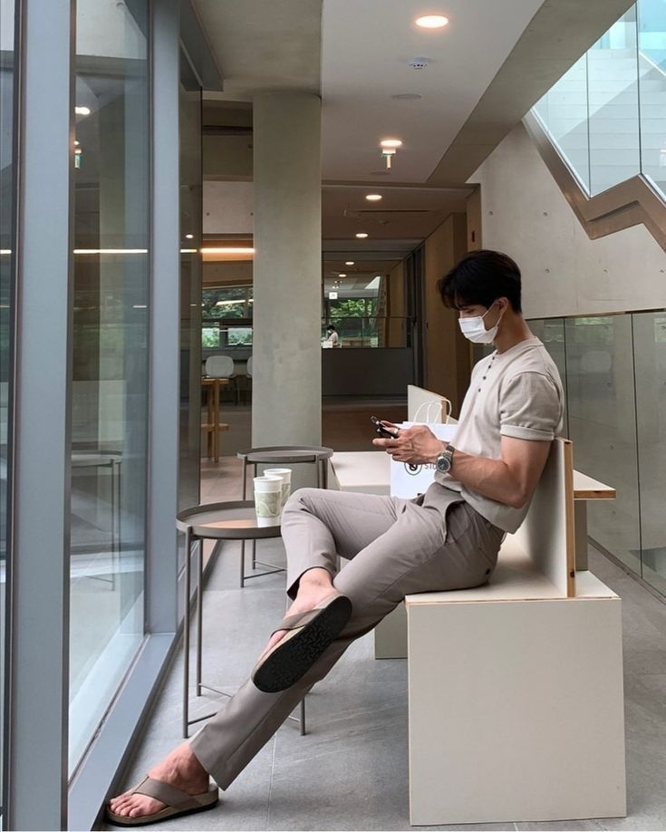

Más Allá de la Moda, la Esencia de la Belleza
Evolución y el Estilo Personal
Nacido en el corazón de Japón, Muzan Kibutsuji ha llevado la fotografía de moda a nuevas alturas. Desde su infancia, cuando un regalo de su abuelo despertó su pasión por capturar la belleza en cada instante, Muzan ha recorrido un camino extraordinario.
Sus inicios en las calles de Nagoya, capturando expresiones auténticas, lo llevaron a los grandes escenarios de la moda en Nueva York y Londres. Hoy en día, su estilo único y su ojo agudo para el detalle lo han convertido en uno de los fotógrafos más solicitados de la industria. Muzan no solo captura imágenes, sino que crea obras de arte que trascienden las tendencias y se conectan con el alma de cada persona.
 Pasión y versatilidad
Muzan Kibutsuji es más que un fotógrafo; es un visionario que transforma la realidad en arte. Su pasión por la moda, la belleza y la expresión humana lo ha llevado a colaborar con las revistas más prestigiosas del mundo y a capturar la esencia de las modelos más reconocidas.
Pero más allá de las pasarelas y los estudios, Muzan encuentra inspiración en la vida cotidiana. Sus fotografías callejeras, llenas de espontaneidad y autenticidad, son un testimonio de su amor por la gente y su capacidad para encontrar la belleza en cualquier lugar.